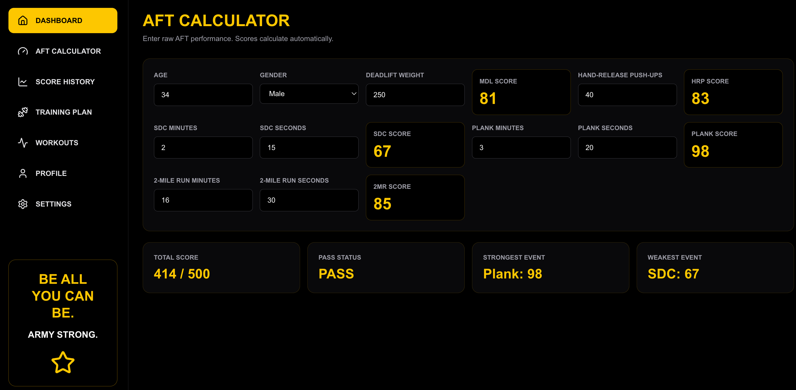
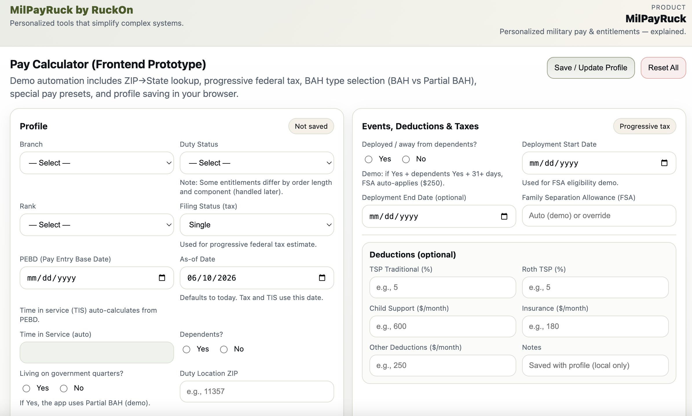
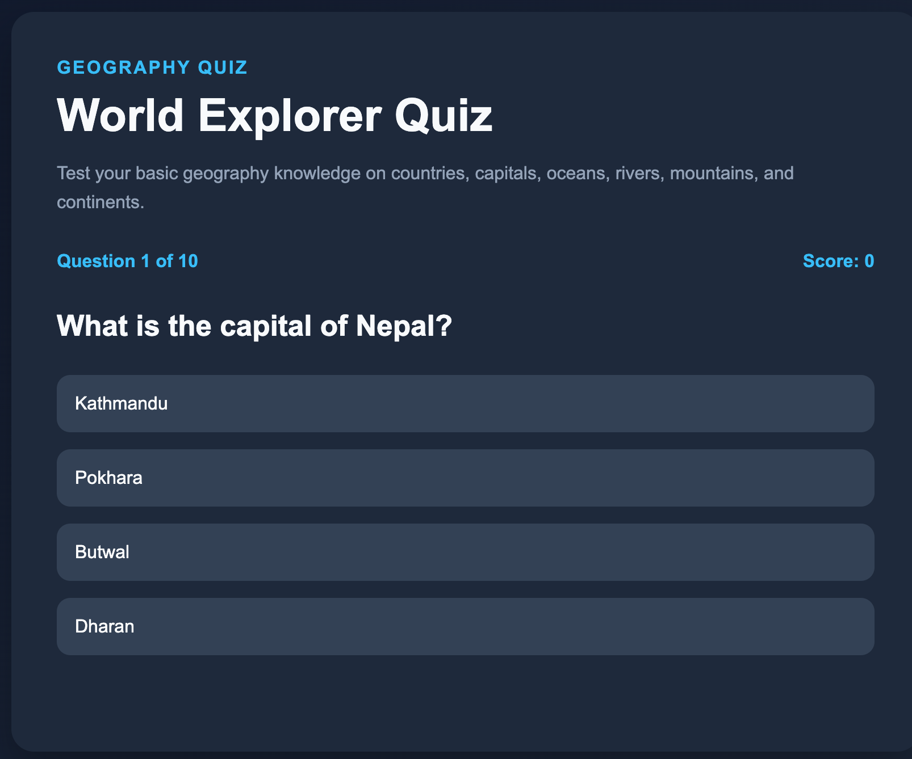

Bhim
Bahadur KC
Computer Science & Applied Mathematics • Military Professional
Portfolio / About
Exploring the intersection of mathematics, technology, and real-world problem solving.
As a Computer Science and Applied Mathematics student expected to graduate in August 2026, I enjoy exploring how mathematics and technology can be applied to solve practical problems. My interests include algorithm design, software development, and building tools that improve efficiency and support better decision-making.
Outside of academics, I have developed valuable leadership, teamwork, and problem-solving skills through military service, athletics, and travel. These experiences have reinforced my commitment to continuous learning, adaptability, and personal growth.
Background
Experience
Military Experience
I have served in the Army National Guard for over 12 years in a variety of leadership, finance, training, and operational support roles. Throughout my military career, I have supported state and federal missions in both combat and non-combat environments, gaining experience in personnel management, accountability, finance operations, logistics, mission coordination, and team leadership. These diverse assignments have allowed me to work with soldiers, leaders, and civilian agencies while adapting to complex and rapidly changing operational requirements.
- Finance Operations – Supported military pay, disbursing operations, vendor payments, and financial certification while ensuring accuracy and regulatory compliance.
- Leadership – Served as a Squad Leader responsible for soldier accountability, readiness, mentorship, and mission execution.
- Fitness & Readiness – Mentored and trained soldiers to improve physical fitness, ACFT performance, and overall readiness through structured training and coaching.
- Operations & Logistics – Managed lodging, meals, equipment, and logistical support during state and federal missions while supporting operational requirements.
- Technology Support – Configured, maintained, and troubleshot computer systems and laptops supporting finance and administrative operations.
Tutoring Experience
I have more than 3 years of experience tutoring students in mathematics, computer science, programming, and problem solving. My goal is to help students understand concepts, develop critical thinking skills, and build confidence in STEM subjects.
- Mathematics – Tutored college-level mathematics including calculus, algebra, and statistics.
- Computer Science – Assisted students with programming concepts, algorithms, and problem-solving techniques.
- Individual/Group Tutoring – Provided one-on-one and small-group instruction tailored to different learning styles.
- Communication & Mentorship – Explained complex concepts in a clear and practical manner while encouraging academic growth and independent learning.
Abilities
Skills
Technical Skills
Python, Java, C++, JavaScript, HTML, CSS, React, Node.js, Express.js, Next.js, MySQL, PostgreSQL, Oracle SQL, MongoDB, Git/GitHub, Linux
Analytical & Problem Solving
Applied Mathematics, Algorithms, Data Structures, Problem Solving, Data Analysis, Critical Thinking
Leadership & Professional Skills
Leadership, Communication, Public Speaking, Project Management, Teamwork, Training & Mentorship, Adaptability, Decision Making
Outside Work
Interests
Distance Running
NYRR races, half marathons, 10-mile races, Army-organized races, major marathon goals, and Armed Forces race challenges.
Adventure
Challenging hikes in New York and Nepal, future Annapurna Base Camp trek, skydiving, ziplining, paragliding, parasailing, sky jumping, jet skiing, and bungee jumping goal.
Travel & Exploration
More than 30 U.S. states and 15 countries across Europe, Asia, North America, and the Caribbean, with interest in history, culture, architecture, and geography.
Selected Work
Projects

RuckOn Fitness
Military fitness platform designed to help soldiers calculate AFT scores, track performance, identify strengths and weaknesses, and follow structured training plans.
Next.js • React • TypeScript • Tailwind CSS
View Live Demo
MilPay Ruck
Military pay and benefits calculator designed to estimate pay, allowances, taxes, special pays, and deductions based on rank, duty status, location, and years of service.
HTML • CSS • JavaScript

World Explorer Quiz
Interactive geography quiz designed to test knowledge of countries, capitals, continents, oceans, rivers, mountains, and other world geography topics.
Academic Background
Education
CUNY Queens College
Bachelor of Science in Computer Science
Minor in Applied Mathematics
Dean's List
LaGuardia Community College
Associate Degree in Liberal Arts: Math and Science
Honor Graduate